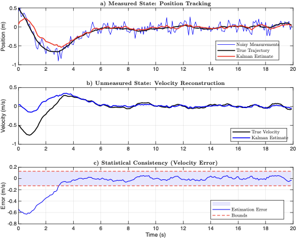

In the previous chapter on LQR design, we assumed that the full state vector \(x_k\) was available for feedback. In practice, this is rarely the case. We typically have access only to a limited set of noisy measurements \(y_k\). To implement modern control strategies like LQR or MPC, we must therefore reconstruct the internal state of the system from these imperfect observations.
While the concept of Observability tells us if the state can be reconstructed mathematically, it does not tell us how to do so robustly in the presence of uncertainty. This chapter derives the optimal solution to the state estimation problem: the Kalman Filter .
This chapter is structured as follows:
We begin with a brief review of probability and stochastic systems, defining the mean and covariance matrices necessary to describe uncertainty.
We formulate the estimation problem and derive the recursive Kalman Filter algorithm, showing how it optimally balances the system model against sensor data.
We explore the mathematical duality between estimation and control (LQR), revealing the deep symmetry in linear systems theory.
We discuss the Steady-State Kalman Filter and its relation to the Algebraic Riccati Equation, which simplifies implementation for time-invariant systems.
Finally, we provide practical guidelines for tuning the filter—specifically, how to select the noise covariance matrices \(W\) and \(V\)—and demonstrate the complete design process with a MATLAB case study.
In previous chapters, we assumed that our system models were perfect and our sensors provided exact measurements. In reality, engineering systems are subject to uncertainty: actuators have jitter, sensors have noise, and mathematical models are merely approximations of complex physical reality.
To deal with this, we must transition from deterministic variables to random variables. In this framework, we do not know the exact state \(x_k\); instead, we track the probability of the state being at a certain location. The Kalman Filter is essentially an algorithm that propagates the mean and covariance of these probability distributions over time.
Before deriving the filter, we briefly review the essential concepts of probability theory required for linear estimation. A detailed review of the probability concepts used in this chapter is provided in Appendix [app:prob].
In many practical control scenarios, we cannot know the state of a system with absolute certainty due to sensor noise, model mismatch, or unknown disturbances. Consequently, we model the state not as a deterministic scalar or vector, but as a random vector \(x \in \mathbb{R}^n\). This means \(x\) does not hold a single fixed value, but is described by a probability distribution function (PDF), denoted as \(p(x)\).
The most fundamental statistical property of a random variable is the Mean (or Expected Value). Intuitively, this represents the “centre of gravity” of the probability distribution, or the average value one would observe if the experiment were repeated an infinite number of times. Mathematically, it is the first moment of the distribution: \[\begin{equation*} \mu = \mathbb{E}[x] = \int_{-\infty}^{\infty} x \, p(x) \, dx \end{equation*}\] Note that for a vector \(x\), this integral is applied element-wise to each component.
A crucial property of the expectation operator \(\mathbb{E}[\cdot]\) is that it is linear. If we apply a deterministic linear transformation to a random variable—such as multiplying it by a constant matrix \(A\) or shifting it by a constant vector \(b\)—the mean transforms in exactly the same manner: \[\begin{equation*} \mathbb{E}[A x + b] = A \mathbb{E}[x] + b \end{equation*}\] This property is of extreme importance in linear system theory. It implies that for a linear dynamical system (e.g., \(x_{k+1} = A x_k + B u_k\)), the average behaviour of the system can be predicted simply by propagating the mean state through the deterministic system matrices, separating the deterministic dynamics from the stochastic noise.
While the mean tells us where the state is likely to be, it tells us nothing about how confident we are in that estimate. This uncertainty is quantified by the Covariance Matrix, typically denoted as \(P\) (or \(\Sigma\)).
For a random vector \(x\) with mean \(\mu\), the covariance is defined as the expected value of the squared error: \[\begin{equation*} P = \text{Cov}(x) = \mathbb{E}\left[ (x - \mu)(x - \mu)^\top \right] \end{equation*}\] If \(x\) has dimension \(n \times 1\), then \(P\) is an \(n \times n\) matrix with specific properties:
Symmetric: \(P = P^\top\).
Positive Semi-Definite: \(P \succeq 0\).
Diagonal Elements (\(P_{ii}\)): Represent the variance of the \(i\)-th state (\(\sigma_i^2\)). A large value indicates high uncertainty.
Off-Diagonal Elements (\(P_{ij}\)): Represent the covariance between state \(i\) and state \(j\).
In linear estimation theory, we predominantly assume that noise and states follow a Gaussian (or Normal) distribution (see Appendix [app:prob] for a detailed treatment of probability distributions). A Gaussian random vector is completely defined by its mean \(\mu\) and covariance \(P\). We write this as: \[\begin{equation*} x \sim \mathcal{N}(\mu, P) \end{equation*}\] The Gaussian assumption is powerful because linear transformations of Gaussian variables remain Gaussian. This property allows the Kalman Filter to define the state entirely using just two parameters: the estimate vector \(\hat{x}\) (the mean) and the error covariance matrix \(P\).
In system modelling, we often represent disturbances as White Noise. A discrete-time stochastic process \(w_k\) is called white noise if it is uncorrelated in time: \[\begin{equation*} \begin{aligned} \mathbb{E}[w_k] &= 0 \\ \mathbb{E}[w_k w_j^\top] &= \begin{cases} W_k & \text{if } k = j \\ 0 & \text{if } k \neq j \end{cases} \end{aligned} \end{equation*}\] Here, \(W_k\) is the Process Noise Covariance. Similarly, for sensors, we define measurement noise \(v_k\) with Measurement Noise Covariance \(V_k\).
Key Property: Linear Propagation of Uncertainty The foundation of the Kalman Filter Predict step relies on how Gaussian distributions transform through linear systems.
Consider a random state vector \(x\) with mean \(\hat{x}\) and covariance \(P\). If this state evolves through linear dynamics with additive zero-mean noise \(w\) (where \(w\) has covariance \(W\)): \[x_{new} = A x + w\]
The statistics of the new state are given by:
New Mean: \[\mathbb{E}[x_{new}] = A\hat{x}\]
New Covariance: \[\text{Cov}(x_{new}) = A P A^\top + W\]
The term \(A P A^\top\) represents how the system dynamics stretch and rotate the uncertainty ellipse, while \(W\) represents the additional uncertainty injected by the process noise.
We consider the problem of estimating the internal state of a discrete-time linear system subject to stochastic disturbances. Unlike deterministic control, where the state is assumed known, here we must infer it from noisy data.
The evolution of the system and the observation process are governed by the following linear difference equations: \[\begin{align*} x_{k+1} &= A x_k + B u_k + w_k \\ y_k &= C x_k + v_k \end{align*}\] Here, \(x_k \in \mathbb{R}^n\) is the state vector, \(u_k \in \mathbb{R}^m\) is the known control input, and \(y_k \in \mathbb{R}^p\) is the measured output.
To derive the optimal filter, we must rigorously define the statistical properties of the noise and the initial conditions. We assume the following:
Process Noise (\(w_k\)): Represents model mismatches and external disturbances. It is assumed to be zero-mean, white Gaussian noise with covariance matrix \(W\): \[w_k \sim \mathcal{N}(0, W), \quad \mathbb{E}[w_k w_j^\top] = W \delta_{kj}\] where \(\delta_{kj}\) is the Kronecker delta (1 if \(k=j\), 0 otherwise). This term ensures that the noise is uncorrelated in time (i.e., the disturbance at time \(k\) is independent of the disturbance at any other time \(j\)).
Measurement Noise (\(v_k\)): Represents sensor inaccuracies. It is assumed to be zero-mean, white Gaussian noise with covariance matrix \(V\): \[v_k \sim \mathcal{N}(0, V), \quad \mathbb{E}[v_k v_j^\top] = V \delta_{kj}\]
Initial Condition (\(x_0\)): The starting state is not a fixed unknown, but a random variable with a known mean and covariance: \[x_0 \sim \mathcal{N}(\bar{x}_0, P_0)\]
Independence: The process noise \(w_k\), measurement noise \(v_k\), and initial state \(x_0\) are mutually uncorrelated.
Our goal is to construct an estimate of the state, denoted as \(\hat{x}_k\), using the history of measurements available up to time \(k\).
We define the estimation error as: \[\begin{equation*} e_k \triangleq x_k - \hat{x}_k \end{equation*}\]
The problem is to find the recursive algorithm that computes \(\hat{x}_k\) such that the expected value of the squared error norm (the Mean Squared Error) is minimised at every time step: \[\begin{equation*} \min_{\hat{x}_k} J_k = \mathbb{E} \left[ \| e_k \|^2 \right] = \mathbb{E} \left[ (x_k - \hat{x}_k)^\top (x_k - \hat{x}_k) \right] \end{equation*}\]
An estimator that satisfies this condition is known as the Minimum Variance Unbiased Estimator (MVUE). Under the Gaussian assumptions listed above, the Kalman Filter is the unique solution to this problem.
To derive the optimal filter, we postulate a recursive linear estimator structure that operates in two distinct phases at each time step: a Prediction phase (based on the system model) and a Correction phase (based on the new measurement).
Let \(\hat{x}_k^-\) denote the a priori state estimate (the prediction before processing the measurement at time \(k\)), and let \(\hat{x}_k\) denote the a posteriori estimate (after incorporating the measurement).
We assume the process noise \(w_k\) and measurement noise \(v_k\) are zero-mean, white, mutually uncorrelated, and independent of the initial estimation error, with covariances: \[\mathbb{E}[w_k w_k^\top] = W, \qquad \mathbb{E}[v_k v_k^\top] = V.\]
The observer dynamics are defined as follows:
Prediction (Time Update): The previous estimate is propagated forward using the deterministic system dynamics: \[\begin{equation} \label{eq:obs_predict} \hat{x}_k^- = A \hat{x}_{k-1} + B u_{k-1}. \end{equation}\]
Correction (Measurement Update): The prediction is corrected using the difference between the actual measurement and the predicted measurement. This difference is called the Innovation (\(\tilde{y}_k\)): \[\begin{equation} \label{eq:obs_correct} \hat{x}_k = \hat{x}_k^- + L_k \underbrace{(y_k - C \hat{x}_k^-)}_{\tilde{y}_k}. \end{equation}\]
Here, \(L_k\) is the Kalman gain. Our objective is to determine \(L_k\) such that the mean squared estimation error is minimised.
Define the a priori estimation error \[e_k^- \triangleq x_k - \hat{x}_k^-.\] Substituting the system dynamics \(x_k = A x_{k-1} + B u_{k-1} + w_{k-1}\) and the prediction equation [eq:obs_predict] yields: \[\begin{align*} e_k^- &= A(x_{k-1} - \hat{x}_{k-1}) + w_{k-1} \nonumber \\ &= A e_{k-1} + w_{k-1}. \end{align*}\]
The a priori error covariance is defined as \(P_k^- \triangleq \mathbb{E}[e_k^- (e_k^-)^\top]\). By substituting the error dynamics into the definition of the covariance, we obtain: \[\begin{equation*} P_k^- = \mathbb{E}\left[ (A e_{k-1} + w_{k-1}) (A e_{k-1} + w_{k-1})^\top \right]. \end{equation*}\] Expanding the quadratic term yields four components: \[\begin{align*} P_k^- &= \mathbb{E}\left[ A e_{k-1} e_{k-1}^\top A^\top + A e_{k-1} w_{k-1}^\top + w_{k-1} e_{k-1}^\top A^\top + w_{k-1} w_{k-1}^\top \right] \nonumber \\ &= A \underbrace{\mathbb{E}[e_{k-1} e_{k-1}^\top]}_{P_{k-1}} A^\top + A \underbrace{\mathbb{E}[e_{k-1} w_{k-1}^\top]}_{0} + \underbrace{\mathbb{E}[w_{k-1} e_{k-1}^\top]}_{0} A^\top + \underbrace{\mathbb{E}[w_{k-1} w_{k-1}^\top]}_{W}. \end{align*}\] The cross-terms \(\mathbb{E}[e_{k-1} w_{k-1}^\top]\) vanish because the white process noise \(w_{k-1}\) is uncorrelated with the error accumulated in previous time steps. Thus, the equation simplifies to: \[\begin{equation} \label{eq:cov_predict} P_k^- = A P_{k-1} A^\top + W. \end{equation}\]
The a posteriori estimation error is defined as \(e_k \triangleq x_k - \hat{x}_k\). Substituting the correction equation [eq:obs_correct] and the measurement model \(y_k = C x_k + v_k\) gives: \[\begin{align*} e_k &= (I - L_k C)e_k^- - L_k v_k. \end{align*}\]
To derive the covariance update, we substitute the expression for \(e_k\) into the definition \(P_k = \mathbb{E}[e_k e_k^\top ]\): \[\begin{equation*} P_k = \mathbb{E}\left[ \left( (I - L_k C)e_k^- - L_k v_k \right) \left( (I - L_k C)e_k^- - L_k v_k \right)^\top \right]. \end{equation*}\] Distributing the transpose operator \((X - Y)^\top = X^\top - Y^\top\) inside the second bracket gives: \[\begin{equation*} P_k = \mathbb{E}\left[ \left( (I - L_k C)e_k^- - L_k v_k \right) \left( (e_k^-)^\top (I - L_k C)^\top - v_k^\top L_k^\top \right) \right]. \end{equation*}\] Expanding the product yields four terms: \[\begin{align*} P_k = \mathbb{E}\bigg[ \underbrace{(I - L_k C) e_k^- (e_k^-)^\top (I - L_k C)^\top}_{\text{Term 1}} - \underbrace{(I - L_k C) e_k^- v_k^\top L_k^\top}_{\text{Term 2}} - \underbrace{L_k v_k (e_k^-)^\top (I - L_k C)^\top}_{\text{Term 3}} + \underbrace{L_k v_k v_k^\top L_k^\top}_{\text{Term 4}} \bigg]. \end{align*}\] We now analyse the expectation of each term:
Term 1: Since \(\mathbb{E}[e_k^- (e_k^-)^\top] = P_k^-\), this becomes \((I - L_k C) P_k^- (I - L_k C)^\top\).
Terms 2 & 3: The measurement noise \(v_k\) is uncorrelated with the a priori estimation error \(e_k^-\) (which depends only on past history). Therefore, \(\mathbb{E}[e_k^- v_k^\top] = 0\), and these cross-terms vanish.
Term 4: Since \(\mathbb{E}[v_k v_k^\top] = V\), this becomes \(L_k V L_k^\top\).
Combining these results yields the Joseph form covariance update: \[\begin{equation} \label{eq:cov_update_long} P_k = (I - L_k C) P_k^- (I - L_k C)^\top + L_k V L_k^\top. \end{equation}\]
Step 3: Optimisation of the Gain
To derive the optimal gain, we define a cost function \(J\) based on the total mean squared error of the states. This is equivalent to minimising the trace (sum of diagonal elements) of the a posteriori covariance matrix: \[\begin{equation*} J(L_k) = \mathrm{Tr}(P_k) \end{equation*}\]
First, we substitute the full expression for \(P_k\) from Eq. [eq:cov_update_long] and expand the terms: \[\begin{align*} P_k &= (P_k^- - L_k C P_k^-)(I - C^\top L_k^\top) + L_k V L_k^\top \nonumber \\ P_k &= P_k^- - P_k^- C^\top L_k^\top - L_k C P_k^- + L_k C P_k^- C^\top L_k^\top+ L_k V L_k^\top \end{align*}\] We can group the quadratic terms involving \(L_k\): \[\begin{equation} \label{eq:Pk_expanded} P_k = P_k^- - P_k^- C^\top L_k^\top - L_k C P_k^- + L_k (C P_k^- C^\top + V) L_k^\top \end{equation}\]
To minimise \(J\) with respect to the matrix \(L_k\), we use the following standard matrix derivative identities:
\(\frac{\partial}{\partial X} \mathrm{Tr}(X A) = A^\top\)
\(\frac{\partial}{\partial X} \mathrm{Tr}(A X^\top ) = A\)
\(\frac{\partial}{\partial X} \mathrm{Tr}(X A X^\top) = 2 X A\) (if \(A\) is symmetric)
Note that the trace is invariant under transpose, so \(\mathrm{Tr}(P_k^- C^\top L_k^\top) = \mathrm{Tr}((P_k^- C^\top L_k^\top)^\top) = \mathrm{Tr}(L_k C P_k^-)\). Thus, the two linear terms in [eq:Pk_expanded] contribute identically to the derivative.
We differentiate \(J = \mathrm{Tr}(P_k)\) with respect to \(L_k\) and set the result to zero: \[\begin{equation*} \frac{\partial J}{\partial L_k} = \underbrace{0}_{\text{Const}} - \underbrace{2 P_k^- C^\top}_{\text{Linear Terms}} + \underbrace{2 L_k (C P_k^- C^\top + V)}_{\text{Quadratic Terms}} = 0 \end{equation*}\]
Rearranging the equation yields: \[\begin{equation*} L_k (C P_k^- C^\top + V) = P_k^- C^\top \end{equation*}\] The term in the parentheses represents the uncertainty of the measurement prediction. We define this as the Innovation Covariance, \(S_k\): \[\begin{equation*} S_k \triangleq C P_k^- C^\top + V \end{equation*}\] Multiplying from the right by \(S_k^{-1}\) gives the explicit solution for the optimal Kalman gain: \[\begin{equation} \label{eq:opt_gain} \boxed{ L_k = P_k^- C^\top S_k^{-1} } \end{equation}\]
The full update equation [eq:Pk_expanded] is computationally expensive. We can simplify it by substituting the optimality condition back into the equation. From [eq:opt_gain], we know that \(L_k S_k = P_k^- C^\top\). Substituting this into the quadratic term of Eq. [eq:Pk_expanded]: \[\begin{align*} L_k \underbrace{(C P_k^- C^\top + V)}_{S_k} L_k^\top &= (L_k S_k) L_k^\top \nonumber \\ &= (P_k^- C^\top ) L_k^\top \end{align*}\] We substitute this back into the expanded covariance equation: \[\begin{align*} P_k &= P_k^- \cancel{- P_k^- C^\top L_k^\top } - L_k C P_k^- + \cancel{P_k^- C^\top L_k^\top } \nonumber \\ &= P_k^- - L_k C P_k^- \end{align*}\] Factoring out \(P_k^-\) from the right yields the canonical covariance update equation: \[\begin{equation*} \boxed{ P_k = (I - L_k C) P_k^- } \end{equation*}\] Note: While this simple form is mathematically correct for the optimal gain, numerical implementations often use the longer Joseph form (Eq. [eq:cov_update_long]) because it guarantees the resulting matrix remains symmetric and positive definite even in the presence of floating-point rounding errors.
The Discrete-Time Kalman Filter Algorithm Predict: \[\begin{align*} \hat{x}_k^- &= A \hat{x}_{k-1} + B u_{k-1} \\ P_k^- &= A P_{k-1} A^\top + W \end{align*}\]
Compute Gain: \[\begin{align*} S_k &= C P_k^- C^\top + V \\ L_k &= P_k^- C^\top S_k^{-1} \end{align*}\]
Correct: \[\begin{align*} \hat{x}_k &= \hat{x}_k^- + L_k (y_k - C \hat{x}_k^-) \\ P_k &= (I - L_k C) P_k^- \end{align*}\]
In the recursive derivation above, the estimation error covariance \(P_k\) and the Kalman gain \(L_k\) are re-calculated at every time step. This is computationally expensive.
However, for Linear Time-Invariant (LTI) systems—where \(A, B, C, W, V\) are constant—the covariance matrix \(P_k^-\) converges to a constant steady-state matrix \(P_{\infty}\) as \(k \to \infty\), provided certain structural properties are met.
Convergence is guaranteed if the system satisfies two conditions related to observability and controllability:
The pair \((A, C)\) must be Detectable. This ensures that any unstable mode in the system is visible at the output \(y\), allowing the filter to correct it.
The pair \((A, W^{1/2})\) must be Stabilisable. Here, \(W^{1/2}\) is the matrix square root of the process noise covariance (\(W = W^{1/2}(W^{1/2})^\top\)). Intuitively, this condition requires that the process noise "excites" all unstable modes of the system. If an unstable mode is not excited by noise and cannot be seen by sensors, its estimation error variance will grow unbounded.
When these conditions are met, the a priori covariance \(P_{\infty}\) satisfies the Discrete Algebraic Riccati Equation: \[\begin{equation*} P_\infty = A P_\infty A^\top + W - A P_\infty C^\top (C P_\infty C^\top + V)^{-1} C P_\infty A^\top. \end{equation*}\] Consequently, the Kalman gain also converges to a constant matrix: \[\begin{equation*} L_\infty = P_\infty C^\top (C P_\infty C^\top + V)^{-1}. \end{equation*}\]
Using the steady-state gain \(L_\infty\) simplifies the algorithm significantly. We no longer need to update covariance matrices online. The filter reduces to a standard linear state-space system.
We can implement this in two ways:
This preserves the predict-correct structure but uses a fixed gain. \[\begin{align*} \textbf{Correct:} \quad \hat{x}_k &= \hat{x}_k^- + L_\infty (y_k - C \hat{x}_k^-) \\ \textbf{Predict:} \quad \hat{x}_{k+1}^- &= A \hat{x}_k + B u_k \end{align*}\]
We can substitute the correction step into the prediction step to create a single update equation: \[\begin{equation*} \hat{x}_{k+1}^- = A \hat{x}_k^- + B u_k + \underbrace{A L_\infty}_{L_{pred}} (y_k - C \hat{x}_k^-) \end{equation*}\]
Implementation Warning Note the term \(A L_\infty\) in the one-step form. This is because standard Kalman gains correct the current estimate, while the one-step form updates the prediction for the next step directly. When implementing this on a microcontroller, ensure you apply the gain at the correct point in the loop.
A remarkable result in linear systems theory is the mathematical symmetry, or duality, between the optimal control problem (LQR) and the optimal estimation problem (Kalman Filter).
In the LQR problem, we propagate a cost matrix \(P\) backwards in time (from the future horizon to the present) to minimise a weighted sum of states and inputs. In the Kalman Filter, we propagate an error covariance matrix \(P\) forwards in time (from the initial condition to the present) to minimise the mean squared estimation error.
Despite the difference in the direction of time, the recursive equations governing these two matrices are identical under a specific substitution of variables. This means that the same numerical algorithms (such as the Riccati solver) used to design a controller can be used to design an observer.
| Property | LQR (Control) | Kalman Filter (Estimation) |
|---|---|---|
| Direction | Backward (\(t \leftarrow T\)) | Forward (\(0 \to t\)) |
| Dynamics | \(A\) | \(A^\top\) |
| Actuation/Sensing | \(B\) | \(C^\top\) |
| State Penalty / Noise | \(Q\) | \(W\) (Process Noise) |
| Input Penalty / Noise | \(R\) | \(V\) (Measurement Noise) |
| Resulting Gain | \(K\) (Feedback) | \(L^\top\) (Observer) |
This duality allows us to compute the steady-state Kalman gain \(L_{\infty}\) using standard LQR commands in software like MATLAB.
Recall that the MATLAB command for LQR is:
[K, P, E] = dlqr(A, B, Q, R);By applying the substitutions from Table 1.1, we can compute the optimal estimator gain using the dare solver to obtain the steady-state error covariance \(P_\infty\), and then form the gain directly:
% Solve the dual DARE for the steady-state error covariance
[P_inf, ~, ~] = dare(A', C', W, V);
% Compute the steady-state Kalman gain: L = P*C'*(C*P*C'+V)^{-1}
L = P_inf * C' / (C * P_inf * C' + V);This indicates that if the pair \((A, C)\) is detectable and \((A, W^{1/2})\) is stabilisable (see Section 1.4.1), the Kalman filter estimates will converge, just as an LQR controller stabilises a controllable system. Observability and controllability are sufficient but stronger conditions.
While the system matrices (\(A, B, C\)) obey physical laws, the noise covariance matrices often serve as tuning parameters that dictate the filter’s behaviour.
This matrix represents sensor precision and is straightforward to determine. It is typically diagonal (assuming uncorrelated sensors) and obtained via:
Datasheets: Using the manufacturer’s specified noise variance (\(\sigma^2\)).
Experimentation: Logging data from a stationary sensor and computing the statistical variance of the signal.
The matrix \(W\) is more abstract. It lumps together physical disturbances (e.g., wind gusts) and modelling errors (e.g., linearisation inaccuracies). Since these are difficult to quantify, \(W\) is treated as a tuning handle to adjust the trade-off between the model and the measurements:
High \(W\) (Trust the Sensor): The filter assumes the model is poor. The Kalman gain \(L\) increases. Result: Fast transient response, but the estimate will be noisy.
Low \(W\) (Trust the Model): The filter assumes the model is accurate. The Kalman gain \(L\) decreases. Result: Smooth estimates (noise rejection), but the filter will lag during sudden changes.
Practical Rule: Fix \(V\) based on physical sensor data, then tune \(W\) until the desired balance between smoothness and responsiveness is achieved.
MATLAB: Kalman Filter Implementation (LQG Control) The Problem: Consider the double integrator system (representing a simple mass). Our objective is to stabilise the system using full-state feedback (\(u_k = -K x_k\)). However, we face a practical constraint: we can only measure the position, and that measurement is corrupted by noise. We cannot measure the velocity directly.
The Solution: We design a Linear Quadratic Gaussian (LQG) controller. This consists of two parts:
An LQR Controller (\(K\)) designed for the ideal system to regulate state to zero.
A Steady-State Kalman Filter (\(L\)) to reconstruct the velocity from the noisy position data.
The Code: The script below computes the optimal gains using the duality principle (\(A \to A^\top\), \(B \to C^\top\)) and simulates the closed-loop system.
clear; clc; close all;
dt = 0.1;
A = [1, dt; 0, 1]; % States: [Position; Velocity]
B = [0.5*dt^2; dt]; % Input: Force
C = [1, 0]; % Output: Position only
Q_lqr = eye(2);
R_lqr = 0.1;
% B. Estimator Covariances (Kalman Filter)
% W: Process Noise Covariance (Trust in Model)
% V: Measurement Noise Covariance (Trust in Sensor)
W = 1e-4 * eye(2);
V = 1e-2;
%% Compute Gains (Offline)
% A. Controller Gain (K)
[K, ~, ~] = dlqr(A, B, Q_lqr, R_lqr);
% B. Estimator Gain (L)
% Solve the dual DARE for the steady-state error covariance P_ss
[P_ss, ~, ~] = dare(A', C', W, V);
% Compute steady-state Kalman gain: L = P*C'*(C*P*C'+V)^{-1}
L = P_ss * C' / (C * P_ss * C' + V);
% Calculate theoretical 3-sigma error bounds for plotting
sigma_pos = sqrt(P_ss(1,1));
sigma_vel = sqrt(P_ss(2,2));
%% Simulation Setup
T_final = 10;
N = floor(T_final/dt);
t_vec = 0:dt:T_final-dt;
x_true = [0.5; -0.5]; % Physical truth (starts with error)
x_est = [0; 0]; % Estimator initial guess (starts at 0)
log_x_true = zeros(2, N);
log_x_est = zeros(2, N);
log_y_meas = zeros(1, N);
for k = 1:N
w_k = sqrt(1e-4) * randn(2,1); % Process noise
v_k = sqrt(1e-2) * randn; % Measurement noise
y_k = C * x_true + v_k;
y_tilde = y_k - C * x_est;
x_est = x_est + L * y_tilde;
u_k = -K * x_est;
x_est_next = A * x_est + B * u_k;
x_true_next = A * x_true + B * u_k + w_k;
log_x_true(:,k) = x_true;
log_x_est(:,k) = x_est;
log_y_meas(k) = y_k;
x_true = x_true_next;
x_est = x_est_next;
endResult: Simulation results (Figure 1.1) confirm the filter’s performance. Even though the velocity is never measured directly, the Kalman Filter converges to the true velocity within a few seconds, allowing the LQR controller to stabilise the system effectively.

Scalar Kalman Filter by Hand. Consider a scalar system with \(A = 1\), \(B = 0\), \(C = 1\), process noise covariance \(W = 0.5\), and measurement noise covariance \(V = 2\). The initial conditions are \(\hat{x}_0 = 0\) and \(P_0 = 1\).
You receive the following measurements: \(y_1 = 1.2\), \(y_2 = 0.9\), \(y_3 = 1.5\).
For each time step \(k = 1, 2, 3\), carry out the full Kalman filter recursion by hand:
Compute the predicted estimate \(\hat{x}_k^-\) and predicted error variance \(P_k^-\).
Compute the innovation covariance \(S_k = C P_k^- C + V\) and the Kalman gain \(L_k = P_k^- C S_k^{-1}\).
Compute the corrected estimate \(\hat{x}_k = \hat{x}_k^- + L_k(y_k - C\hat{x}_k^-)\) and the updated error variance \(P_k = (1 - L_k C) P_k^-\).
Comment on how the Kalman gain and error variance evolve over the three steps.
Effect of \(W\) and \(V\) on the Kalman Gain. Consider the same scalar system as in Exercise 1 (\(A = 1\), \(C = 1\)), but now treat the noise covariances as parameters.
For the steady-state case, show that the scalar Kalman gain satisfies \[L_\infty = \frac{P_\infty}{P_\infty + V},\] where \(P_\infty\) is the steady-state predicted error variance.
Analyse the two limiting cases:
\(W \gg V\) (process noise dominates): What happens to \(L_\infty\)? What does this mean physically?
\(W \ll V\) (measurement noise dominates): What happens to \(L_\infty\)? What does this mean physically?
Fix \(V = 1\) and compute the steady-state Kalman gain for \(W \in \{0.01,\, 0.1,\, 1,\, 10\}\). Discuss how the filter transitions from “trusting the model” to “trusting the sensor” as \(W\) increases.
Steady-State Kalman Gain via the DARE. Consider the double integrator system from the MATLAB example in this chapter: \[A = \begin{bmatrix} 1 & \Delta t \\ 0 & 1 \end{bmatrix}, \quad B = \begin{bmatrix} \tfrac{1}{2}\Delta t^2 \\ \Delta t \end{bmatrix}, \quad C = \begin{bmatrix} 1 & 0 \end{bmatrix},\] with \(\Delta t = 0.1\), \(W = 10^{-4} I_2\), and \(V = 10^{-2}\).
Write out the Discrete Algebraic Riccati Equation (DARE) that determines the steady-state predicted error covariance \(P_\infty\).
Using the duality between estimation and control (Table 1.1), explain how to compute \(P_\infty\) and \(L_\infty\) using a standard LQR solver by substituting \(A \to A^\top\), \(B \to C^\top\), \(Q \to W\), \(R \to V\).
Verify numerically (e.g. in MATLAB using dare(A’, C’, W, V)) that the steady-state gain \(L_\infty\) is consistent with the values used in the chapter’s simulation.
Augmented State Estimation: Constant Disturbance. Consider a scalar plant \[x_{k+1} = a\, x_k + b\, u_k + d_k + w_k, \qquad y_k = c\, x_k + v_k,\] where \(d_k\) is an unknown but constant disturbance (\(d_{k+1} = d_k\)). The noise \(w_k\) and \(v_k\) have covariances \(W\) and \(V\), respectively.
Define the augmented state vector \(\bar{x}_k = \begin{bmatrix} x_k \\ d_k \end{bmatrix}\) and derive the augmented system matrices \(\bar{A}\), \(\bar{B}\), and \(\bar{C}\) such that \[\bar{x}_{k+1} = \bar{A}\,\bar{x}_k + \bar{B}\,u_k + \bar{w}_k, \qquad y_k = \bar{C}\,\bar{x}_k + v_k.\] State the augmented process noise covariance \(\bar{W}\), assuming that the disturbance drift has a small variance \(W_d\).
Discuss what conditions on the pair \((\bar{A}, \bar{C})\) are needed for the augmented Kalman filter to converge (i.e. detectability of the augmented system).
For \(a = 0.9\), \(b = 1\), \(c = 1\), \(W = 0.01\), \(V = 0.1\), and \(W_d = 10^{-4}\), set up the DARE for the augmented system and explain how the resulting steady-state gain \(\bar{L}_\infty\) simultaneously estimates \(x_k\) and \(d_k\).
Comparing Prediction and Update Steps. Consider a system with \[A = \begin{bmatrix} 0.8 & 0.1 \\ 0 & 0.95 \end{bmatrix}, \quad C = \begin{bmatrix} 1 & 0 \end{bmatrix}, \quad W = \begin{bmatrix} 0.1 & 0 \\ 0 & 0.05 \end{bmatrix}, \quad V = 0.5.\] At time step \(k\), suppose the corrected estimate and covariance are \[\hat{x}_{k-1} = \begin{bmatrix} 2.0 \\ 1.0 \end{bmatrix}, \qquad P_{k-1} = \begin{bmatrix} 0.3 & 0.05 \\ 0.05 & 0.2 \end{bmatrix}.\]
Compute the predicted estimate \(\hat{x}_k^- = A\hat{x}_{k-1}\) (assuming \(u_{k-1} = 0\)) and the predicted covariance \(P_k^- = A P_{k-1} A^\top + W\).
Compare \(\mathrm{Tr}(P_{k-1})\) with \(\mathrm{Tr}(P_k^-)\). Explain why the trace increases during prediction.
Suppose the measurement at time \(k\) is \(y_k = 1.85\). Compute the innovation \(\tilde{y}_k = y_k - C\hat{x}_k^-\), the innovation covariance \(S_k\), the Kalman gain \(L_k\), the corrected estimate \(\hat{x}_k\), and the corrected covariance \(P_k = (I - L_k C) P_k^-\).
Compare \(\mathrm{Tr}(P_k^-)\) with \(\mathrm{Tr}(P_k)\). Explain why the trace decreases during the correction step.
Observability and Filter Convergence. Consider a two-state system with \[A = \begin{bmatrix} 1 & 1 \\ 0 & 1 \end{bmatrix}, \quad C_1 = \begin{bmatrix} 1 & 0 \end{bmatrix}, \quad C_2 = \begin{bmatrix} 0 & 0 \end{bmatrix}.\]
Compute the observability matrix \(\mathcal{O} = \begin{bmatrix} C \\ CA \end{bmatrix}\) for both \(C_1\) and \(C_2\). Which system is observable?
For the observable case (\(C_1\)), explain why the Kalman filter covariance \(P_k\) is guaranteed to converge to a finite steady-state value \(P_\infty\) (assuming \(W > 0\)).
For the unobservable case (\(C_2\)), explain why \(P_k\) grows without bound regardless of the choice of \(W\) and \(V\). What does this imply about the practical feasibility of state estimation?